Game · In development · Playable demo
Midnight at the Multiplex
A lo-fi, 1999-set life and work sim about the people who turn the lights off after the last show.
It's the summer before Y2K. Cell phones are bulky luxuries, the internet crawls, and you just got hired at the Grande: nine screens anchoring a mid-sized mall, a marquee with a couple of bulbs burned out, and carpet that smells like butter and spilled soda. Pay is $5.15 an hour. Rent is due. And after the last show lets out and the lights go down, some things in the building don't quite add up.
Play the demo
The opening of the game, right here in your browser: the title screen and intro, character creation, your first morning, arriving at the mall, the tutorial rooms, and the start of your first shift. About 15 to 20 minutes.
How to play: click the game first (that also turns the sound on), then use the keyboard: type commands like look or talk, and move with WASD. The little buttons in the game's top-right corner mute it and make it full screen. Best on a computer; phones can open it but can't really play it. Your save stays in this browser. Open the demo in its own tab.
Try the minigames
Shifts at the Grande are full of small jobs and side hustles that turn into games. These two run on their own, no character needed.
Best played full screen: click the button in a game's top-right corner (press it again, or hold Esc, to come back). Click inside a game first so it can detect your keyboard and mouse.
Theater Cleanup
Four minutes, a leaf blower, and a 50-foot cord that snags on every seat back. Clear auditorium 3 after the 7:15 show and bag what the crowd left (sometimes cash). WASD to move.
Cool Justin's Timber Lanes
League night down the road: solo, pass-and-play, or against the computer. Aim with the mouse, scroll for spin, then hold and release to throw. Your bowler's stats change power and hook.
What you do
- Be anyone. Pick an age from 14 to 30, seven stats, a clique (Goths, Jocks, Mallrats, Churchies, Oldheads, and more), up to three hobbies, and the skills they unlock. A 15-year-old Mallrat who can talk their way past any manager and a 29-year-old Oldhead who can fix a jammed projector in the dark live completely different summers, with different people in their corner.
- Survive the shift. Dust-mopping the lobby, leaf-blowing the theaters, threading projectors, and upselling combo deals all turn into minigames and contests, because that's how anybody gets through a double.
- Make the money last. Minimum wage has to cover rent, gas, bus fare, and whatever you actually want. A kid living at home and a twenty-something with a lease are playing two different games.
- Make friends (and trouble). Friendships, rivalries, romance, and rumors, with the best and worst of it at Thursday Night Previews, when the mall is locked and the staff has the whole building to themselves.
- Type or move. It plays like a classic text adventure and a small 3D game at once: type commands, or walk the isometric rooms, climb between floors, and sneak past whoever's watching.
The Horrors
Under the day-to-day runs a second layer. The story drops a Big Bad into town (a cryptid, a cover-up, or an urban legend), plus smaller horrors like sabotage and petty crime, and all of it builds toward the finale: the end of the millennium itself, when whichever threat you've been circling comes to a head. Stress and exhaustion lower the veil, so a rough week makes a strange night more likely, and how you face it depends on who you've become and who you can trust. Of course, some nights the scariest thing isn't whatever is scratching at the projection booth door. It's the rent, the breakup, or the schedule that just came out with your hours cut.
A real 1999, or your own
- A true-to-1999 campaign. One continuous story on a 5-minute clock, from the last day of school and the first day of summer 1999 all the way to the Y2K countdown. The weather is historically accurate, day by day, and the real release calendar decides what's on each screen and who lines up to see it. (Funny thing about clocks around here: they get a little strange when one reads 11:59 on the last night of 1999.)
- Built to be modded. The rooms, town, characters, dialogue, movies, weather, and rules are all data. The same friendly tools I build the game with (a room editor, a town map editor, and Scenemaker for dialogue) let anyone make a custom campaign of their own.
How I'm building it
- Plain JavaScript with three.js for the 3D rooms; no game engine, and it runs straight from a web page.
- Original pixel art, an animated title screen, lighting, weather, and music.
Status: in development. The demo is the finished opening; the rest of the story, the town, and the minigames are still being built.
In motion
First looks
Click a picture to see it full size.

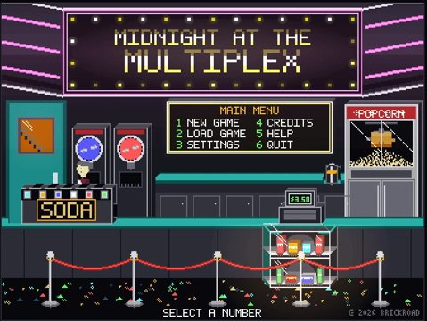

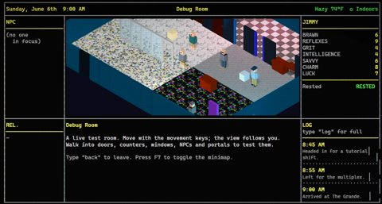

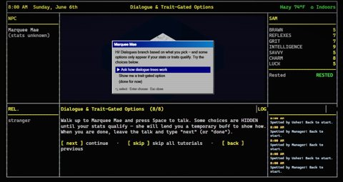

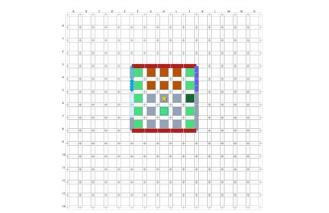

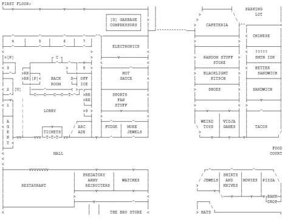

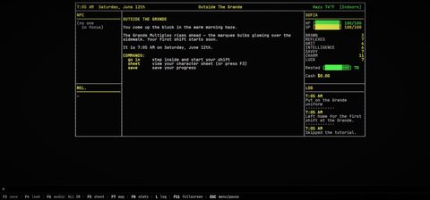

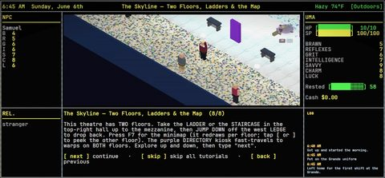

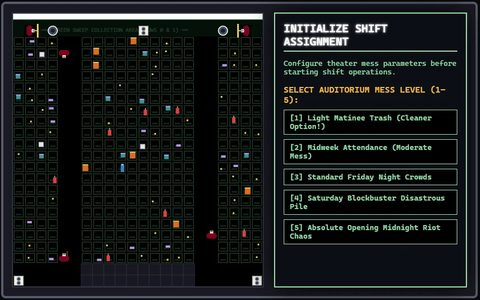

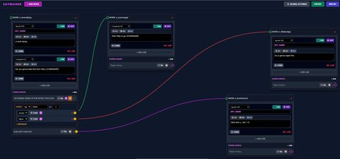

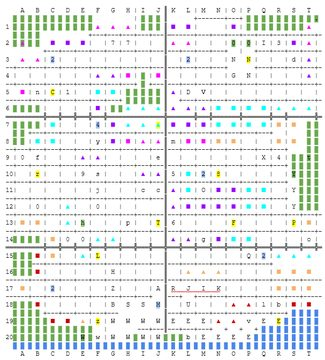

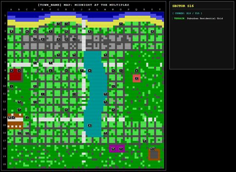

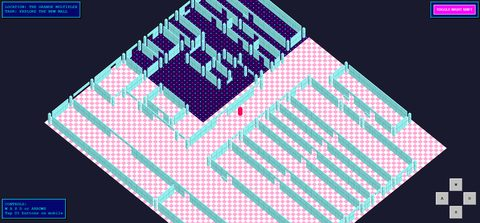